OTIUM — это практика осмысленного досуга. В античной традиции otium означало не отдых от труда, а время, в котором человек возвращается к взгляду, памяти и мышлению.
Мы создаём маршруты не для «посещения», а для пребывания — для внимательного присутствия в архитектуре и памяти места.
OTIUM существует для тех, кто хочет смотреть медленно.
От древнерусских храмов Киевской Руси до стеклянных башен XXI века русская архитектура прошла путь от сакрального образца к имперскому параду, от авангардного эксперимента к типовой панели и обратно — к международному неоэклектизму.
Первые каменные соборы — София Киевская, новгородские и псковские храмы — задали крестово-купольную модель. Русские каменщики XI–XII веков освоили кирпич и камень, адаптировав византийские пропорции к местным материалам. Московское зодчество XV–XVI веков соединило итальянские мотивы с шатровыми экспериментами; узорочье и нарышкинское барокко ознаменовали пышный декор допетровской и ранней петровской эпохи.
С основания Санкт-Петербурга архитектура стала языком европейского присутствия: петровское и елизаветинское барокко, классицизм и ампир сформировали парадные ансамбли столицы. В XIX веке Константин Тон утвердил русско-византийский стиль, а эклектика и псевдорусский романтизм наполнили города музеями, вокзалами и торговыми рядами.
На рубеже XX века модерн и неорусский стиль дали выразительные силуэты; неоклассицизм сохранял торжественность буржуазного города. После революции конструктивизм искал новую жизнь в стекле и бетоне, но уже в 1930-е годы наступил поворот к монументальному неоклассицизму и «сталинскому ампиру» — высоткам, метро, ВДНХ.
Послевоенная массовая застройка принесла серийные панельные микрорайоны и советский модернизм — от Останкино до брутализма. С конца 1980-х постмодернизм иронично цитирует прошлое, а современные проекты — Москва-Сити, Зарядье, Лахта-Центр — вписывают Россию в глобальный архитектурный диалог.
Этот путеводитель выстроен по тридцати двум стилям и направлениям: в каждой главе — два-три знаковых памятника с именами архитекторов и кратким контекстом. Маршрут можно читать хронологически как историю взгляда на форму, пространство и государственный идеал.
Каменное зодчество Киевской Руси складывалось на стыке византийской традиции и местных мастерских. Крестово-купольный храм, мозаика и фреска определяют облик древнейших сохранившихся памятников.
Стены храмов массивны, притворы компактны, купола часто опираются на паруса. В интерьере важны икона и мозаичный образ — архитектура служит богослужению и власти.
Киев, Новгород и Владимир — главные центры; отсюда распространяются приёмы, которые позже разовьёт московское зодчество.
Главные архитекторы
Византийские мастера — Привезли в Киев и Новгород крестово-купольный тип и приёмы мозаичной росписи.
Место, которое обязательно стоит посетить всем, кто интересуется украинской культурой и религией. Лавра предлагает захватывающие виды на реку Днепр и дает представление о богатом историческом и духовном наследии страны.
Основанный в XI веке князем Святополком II, Михайловский Златоверхий монастырь претерпел множество преобразований на протяжении своей истории. Он был разрушен советским режимом в 1934 году, но был восстановлен в начале 1990-х годов, символизируя возрождение украинской культуры и веры после лет репрессий. Монастырь Святого Михаила имеет значительное культурное и религиозное значение для украинцев. Это ключевое место для православного христианского поклонения и сыграло роль в различных национальных событиях, отражая пересечение веры и национальной идентичности. Монастырь также является свидетельством художественного наследия Украины, демонстрируя изысканные фрески и мозаики, которые подчеркивают богатые религиозные традиции страны.
Адрес: Московский Кремль | Стиль: Древнерусское зодчество (X–XVII вв.)
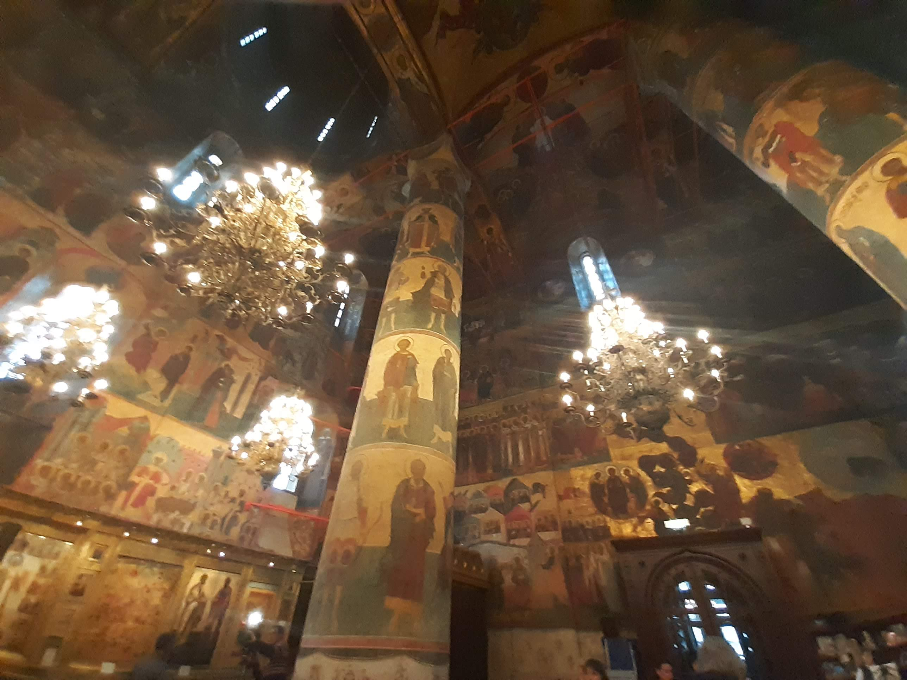
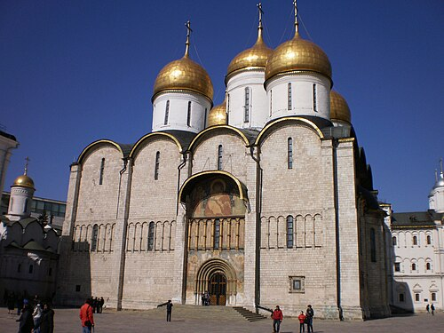
Успенский собор — главный храм Московского Кремля и место венчания русских государей. Построен в 1475–1479 годах итальянским зодчим Аристотелем Фиораванти на месте собора XIV века. До 1917 года здесь венчались на царство от Ивана IV до Николая II; хоронили митрополитов и патриархов. Главный храм Российского государства до 1917 года; образец кремлёвского зодчества XV века.
Новгородская школа отличается пониженными барабанами, асимметричными фасадами и выразительной кирпичной кладкой. Храмы тесно связаны с городской площадью и торговыми путями.
Мастера экономят камень, но усиливают декор кирпичом — зубцы, пояски, вложенные арки. Фрески часто сохраняются лучше, чем в других регионах.
Стиль расцветает в XII–XV веках и влияет на поздние псковские и московские приёмы.
Главные архитекторы
Пётр Китира — Строитель церкви Спаса на Ильине — образец новгородской пластики и фресок Феофана Грека.
Новгородские артели — Передавали приёмы кирпичной кладки и низких барабанов из поколения в поколение.
Адрес: ул. Малая Дмитровка, 4 | Стиль: Новгородская школа (XII–XV вв.)
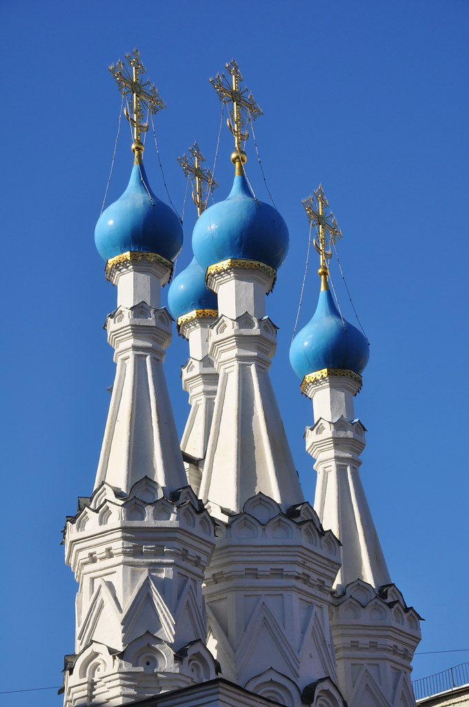
Церковь Рождества Богородицы в Путинках — один из последних храмов московского узорочья с трёхшатровым завершением. Построена в 1649–1652 годах; название — от «пути» (здесь находился посольский двор). Уникальное трёхшатровое завершение и богатый кирпичный декор; сохранился иконостас XVII века. Образец московского узорочья; единственный в Москве храм с трёхшатровым завершением.
Адрес: Великий Новгород | Стиль: Новгородская школа (XII–XV вв.) | Период: 1374
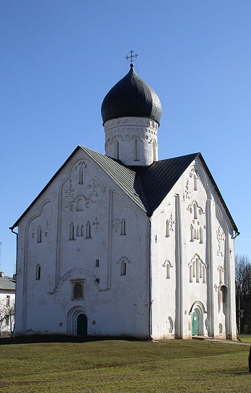
Церковь Спаса Преображения на Ильине — памятник новгородского зодчества 1374 года с фресками Феофана Грека. Построена в 1374 году; росписи Феофана Грека (1378) — один из вершинных памятников византийско-новгородской живописи XIV века. Главный храм новгородской школы на Торговой стороне.
Адрес: Никитников переулок, 3 | Стиль: Новгородская школа (XII–XV вв.)
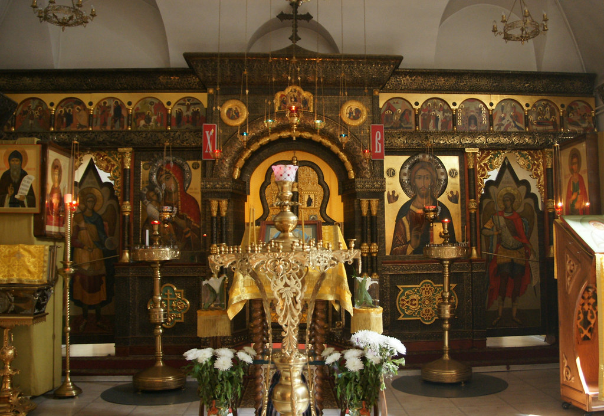
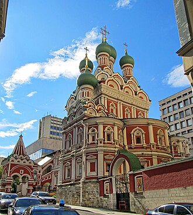
Построена в 1628–1653 годах на средства купца Григория Никитникова как домовый храм при его усадьбе в Китай-городе. Образец «узорочья»: нарядный кирпичный декор, шатровая колокольня, асимметричная композиция. В интерьере сохранилась роспись Симона Ушакова (1650-е) — образец ярославской живописной традиции в Москве. С 1923 года — музей; с 1990-х возобновлены богослужения. Памятник посадского зодчества XVII века; в интерьере сохранились фрески Симона Ушакова (1650-е). Домовый храм купца Никитникова — образец «узорочья» и ярославской живописной традиции в Москве.
Адрес: Великий Новгород | Стиль: Новгородская школа (XII–XV вв.) | Период: 1360-е
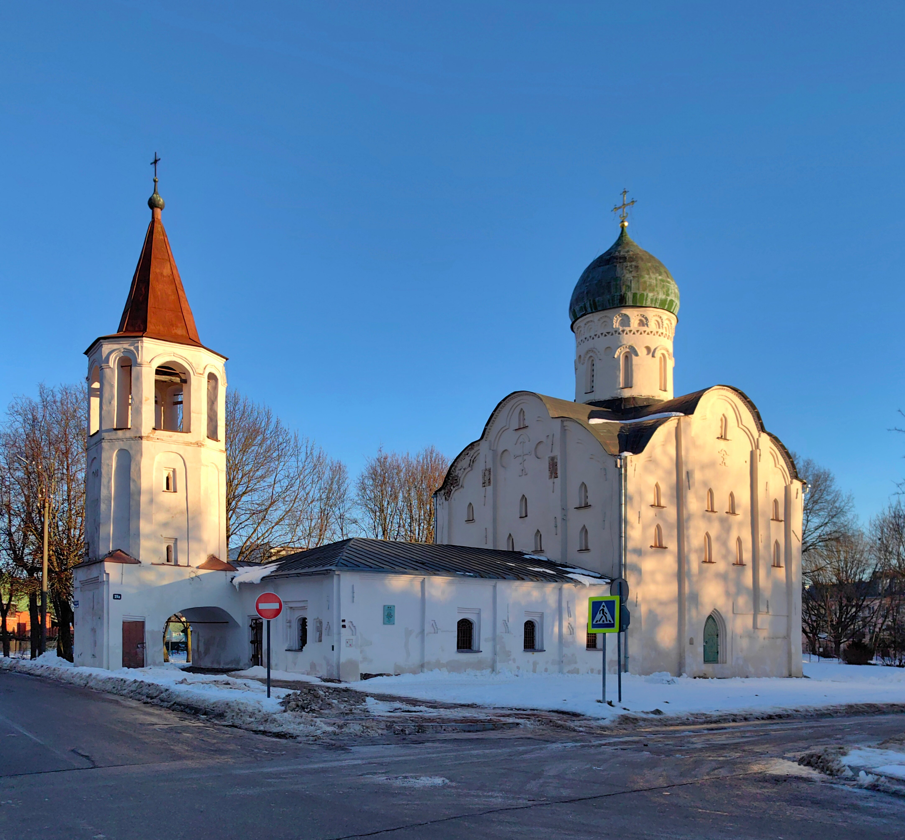
Церковь Фёдора Стратилата на Ручью — один из ранних новгородских храмов с фресками XIV века. Построена в 1360–1361 годах на торговом берегу Волхова. Четырёхстолпный четверик с тремя апсидами сохранил росписи, в том числе образы святых в полный рост. Образец новгородской школы до влияния московского узорочья.
Адрес: Псков | Стиль: Псковская школа (XIV–XVI вв.)
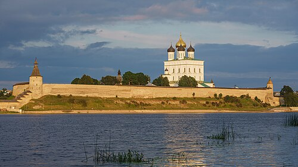
Псковский кремль (Кром) — древнее ядро города на высоком мысе у слияния рек. Крепость складывалась с X века; каменные стены и башни — в основном XV–XVII веков. В ансамбле — Троицкий собор, Довмонтов город, Приказные палаты. Символ оборонительной славы Псковской земли и центр городской истории.
Адрес: Псков | Стиль: Псковская школа (XIV–XVI вв.)
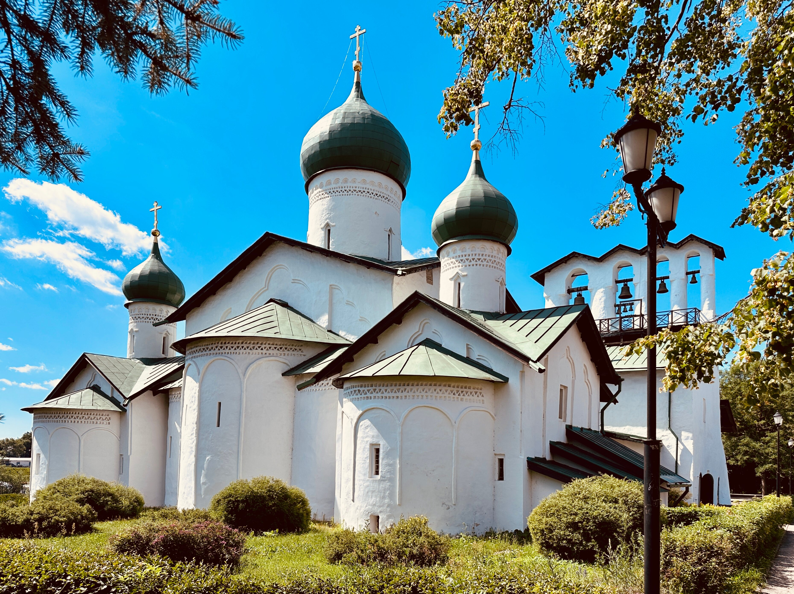
Церковь Богоявления с Запсковья — жемчужина псковского зодчества на правом берегу Великой. Возведена в конце XV — начале XVI века; к храму примыкает отдельная колокольня. Строгий кубический объём, три апсиды и лаконичный декор характерны для псковской школы. Один из лучших сохранившихся памятников средневекового Пскова вне Крома.
Адрес: Псков | Стиль: Псковская школа (XIV–XVI вв.)
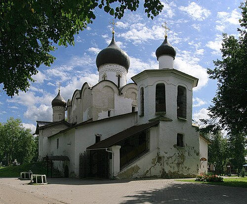
Церковь Василия на Горке — один из лучших памятников псковской школы XV века на Октябрьском проспекте. Каменный храм вырос на месте деревянной церкви XIV века. Трёхапсидный объём увенчан одной главой; стены украшены ступенчатыми арками и поясками из плинфы — характерный псковский декор. Храм входит в серию памятников псковского зодчества, внесённую в список Всемирного наследия ЮНЕСКО. Памятник демонстрирует лаконичный объём и выразительную кирпичную пластику псковских мастеров.
Адрес: Москворецкая наб., 3 | Стиль: Псковская школа (XIV–XVI вв.)
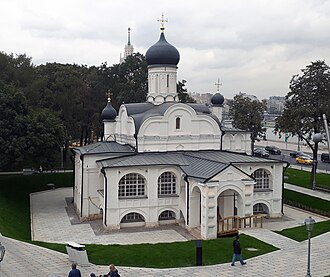
Известна с XIV века; каменный храм — XVI век, перестройки XVII–XIX веков. Название — по Зачатию святой Анны (матери Богородицы). Расположена в Зарядье у стены Китай-города; в советское время закрыта, использовалась под учреждения. Возвращена Церкви в 1990-х; отреставрирована. Особо почитается парами, молящимися о даровании детей. Один из старейших храмов Зарядья; у стены Китай-города; паломничество для молитв о чадородии; памятник храмового зодчества XVI–XIX веков.
Адрес: ул. Льва Толстого, 2 | Стиль: Псковская школа (XIV–XVI вв.)
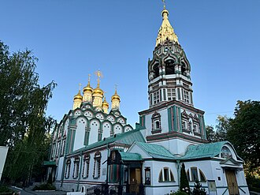
Построена в 1679–1682 годах в слободе ткачей (хамовников). Яркий образец московского узорочья. Узнаваемый силуэт в панораме города; в храме хранится чтимая икона «Спас Нерукотворный» (XVII в.). Памятник храмового зодчества; важная доминанта района.
Архангельский собор Московского Кремля — усыпальница великих князей и царей, возведённая Алевизом Новым. Построен в 1505–1508 годах итальянским зодчим Алевизом Новым на месте старого Архангельского собора. До переноса столицы в Петербург здесь хоронили правителей — от Ивана Калиты до первых Романовых; в соборе более 50 захоронений и иконостас XVII века. С 1918 года храм — музей в составе Кремля. Некрополь династий Рюриковичей и первых Романовых; единственный в Кремле храм-усыпальница правителей.
Адрес: Московский Кремль | Стиль: Московское зодчество (XV–XVI вв.)
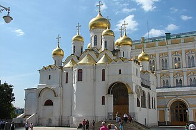
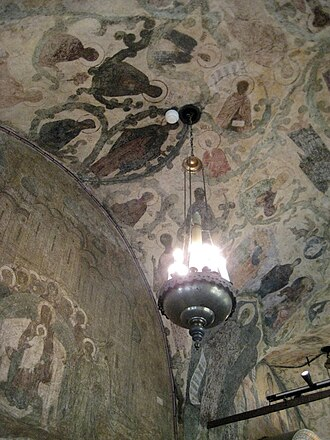
Построен в 1484–1489 годах псковскими мастерами на месте старой домовой церкви. Неоднократно перестраивался (XVI–XIX вв.); связь с царским дворцом через сени и переходы. Иконостас и росписи — работы Феодосия, Андрея Рублёва (фрагменты), мастеров XVII века. Полы из агата и яшмы (XVI в.). С 1918 года — музей в составе Кремля. Личная (домовая) церковь великих князей и царей; фрески и иконы выдающихся мастеров; уникальные полы из цветного камня; часть ансамбля Соборной площади Кремля.
Адрес: Москва | Стиль: Шатровый стиль (XVI в.) | Период: 1561
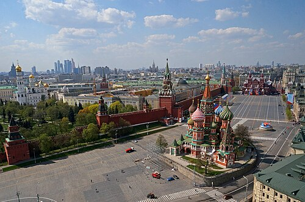
Собор Покрова на Рву, известный как храм Василия Блаженного, — главный шедевр московского шатрового зодчества XVI века. Заложен в 1555–1561 годах по повелению Ивана IV в память взятия Казани. Девять отдельных церквей на общем подклете образуют праздничный силуэт Красной площади; центральная глава восходит к шатру Вознесения в Коломенском. Уникальный ансамбль сочетает шатры, главки и яркую роспись фасадов.
Адрес: Москва | Стиль: Шатровый стиль (XVI в.) | Период: 1532
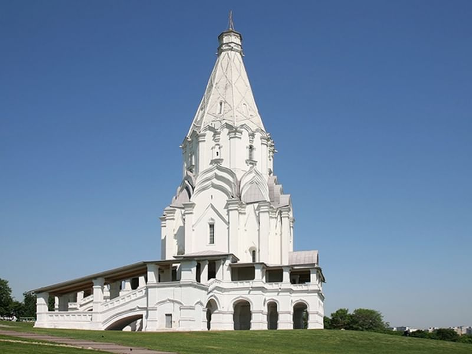
Церковь Вознесения в Коломенском — первый шатровый храм на русской земле и образец московского зодчества 1530-х. Построена в 1532 году в честь рождения царевича Ивана (будущего Ивана Грозного). Восьмигранный шатёр без внутренних опор восходит к деревянным башням и сторожевым постройкам; под шатром — молельный зал с керамическим иконостасом. Включена в список Всемирного наследия ЮНЕСКО. Шатровая форма стала символом московского эксперимента эпохи Ивана IV.
Адрес: 2-й Кадашёвский пер., 7 | Стиль: Шатровый стиль (XVI в.)
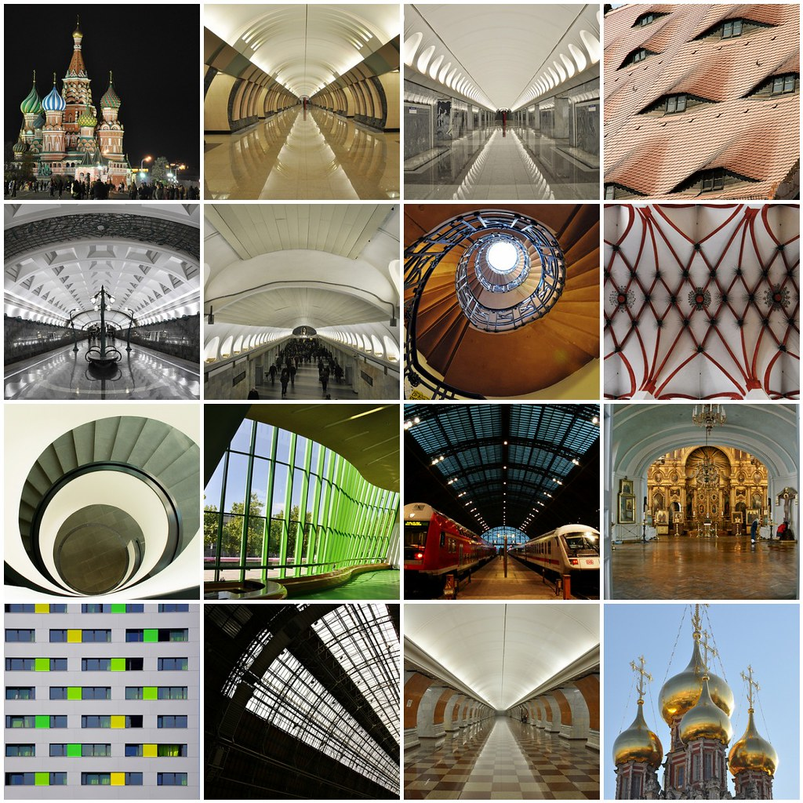
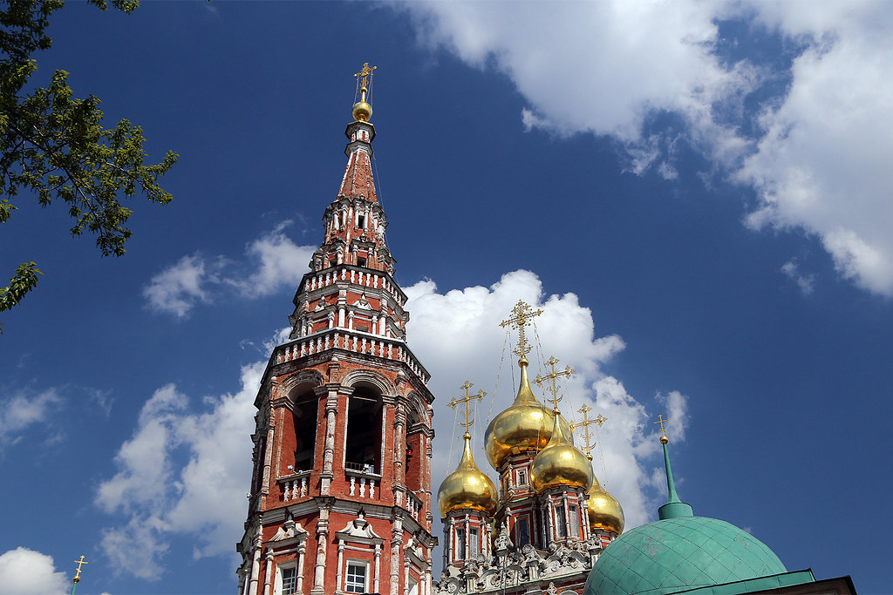
Построена в 1687–1695 годах в слободе кадашей (бондарей). Образец нарышкинского барокко, колокольня — одна из высотных доминант. Шедевр нарышкинского барокко; колокольня высотой 43 м — одна из высочайших в Москве. Памятник эпохи Нарышкиных; важная градостроительная доминанта.
Адрес: ул. Маросейка, 5 | Стиль: Шатровый стиль (XVI в.)
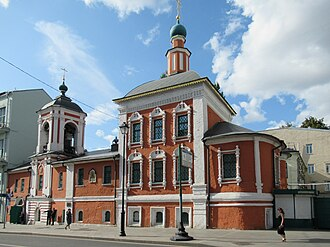
Известна с XV века. Каменный храм — XVII–XVIII века. В 1920–1930-х здесь служил св. Алексий Мечёв; храм не закрывался. Место служения св. Алексия Мечёва (канонизирован в 2000); «мечёвский» приход — центр старчества и духовного окормления в центре Москвы. Памятник истории Русской церкви XX века.
Адрес: Московская область | Стиль: Шатровый стиль (XVI в.)
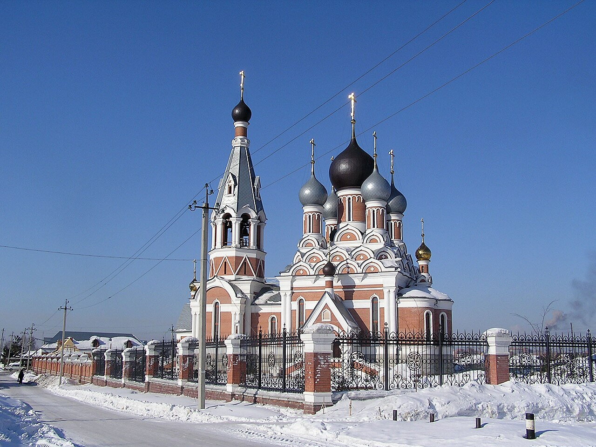
Церковь Преображения в селе Остров — редкий памятник шатрового типа Подмосковья XVI века. Возведена в конце XVI века; четырёхугольный шатёр на высоком барабане завершает компактный четверик. Храм сохранил черты перехода от крестово-купольной схемы к шатровым экспериментам московских мастерских. Важный пример распространения шатровой формы за пределами Кремля и Коломенского.
Теремной дворец — жилой комплекс русских государей в Московском Кремле, вершина московского узорочья. Возведён в 1635–1636 годах на месте более ранних построек; золочёные кровли, наличники и кокошники украшают фасады. Соединён с Грановитой палатой и соборами Кремля в единый царский ансамбль. Резиденция царской семьи до переноса столицы в Петербург; редкий сохранившийся терем XVII века.
Адрес: ул. Поварская, 5 | Стиль: Русское узорочье (XVII в.)
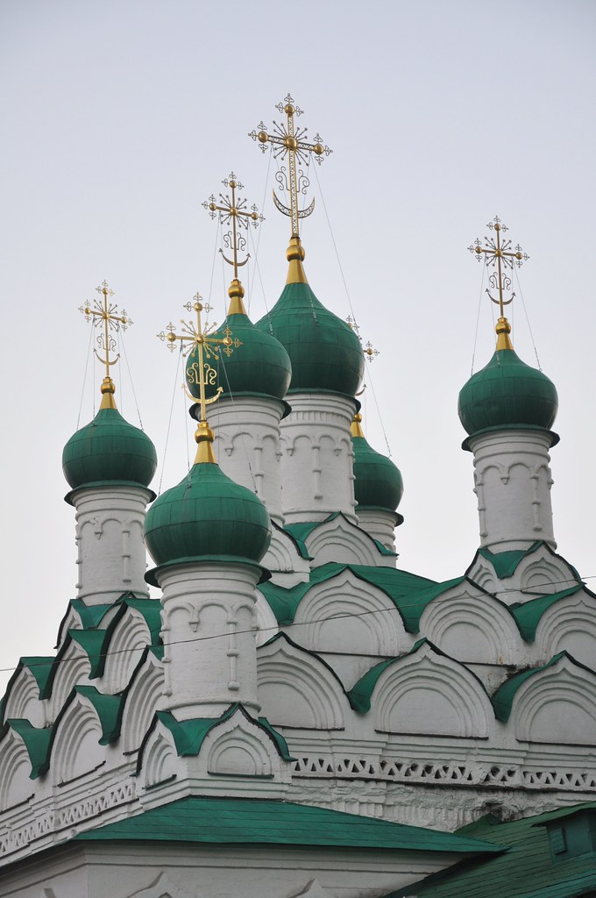
Известна с 1625 года. Каменный храм — 1676–1679. Название — по преподобному Симеону Столпнику. Рядом — усадьбы и особняки. Памятник нарышкинского барокко; часть исторического ансамбля Поварской улицы — «литературного» района с усадьбами и музеями. Вклад в облик одной из красивейших улиц центра.
Адрес: ул. Гончарная, 29 | Стиль: Русское узорочье (XVII в.)
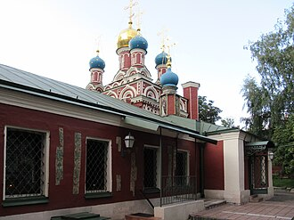
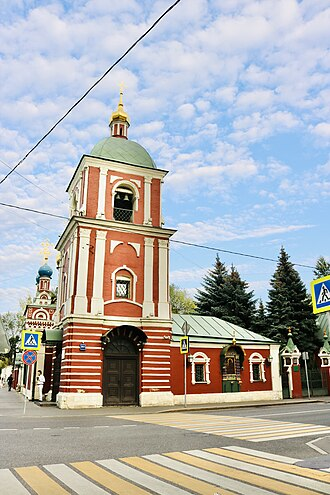
Известна с XVI века. Название — по гончарной слободе. С 1948 — подворье Болгарской православной церкви. Подворье Болгарской православной церкви в Москве с 1948 года; храм не закрывался в советское время. Здесь почитается икона Божией Матери «Три радости»; памятник храмовой архитектуры Гончарной слободы.
Адрес: Москва | Стиль: Нарышкинское барокко (конец XVII в.) | Период: 1693
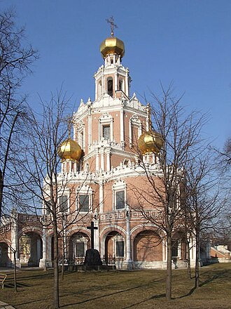
Церковь Покрова в Филях — шедевр нарышкинского барокко на бывшей усадьбе Нарышкиных. Построена в 1690–1693 годах; белокаменный храм с пятиглавием, восьмериками и богатым наличным декором стал образцом «московского барокко». Интерьер сохраняет резной иконостас и росписи. Один из высших памятников московского зодчества конца XVII века.
Построена в 1676–1679 годах в царской усадьбе Измайлово; образец нарышкинского стиля. Здесь провёл детство Пётр I; в Измайлове он нашёл ботик «дедушка русского флота». Перестройки и реставрации XIX–XX веков; в советское время храм закрывали, возвращён Церкви в 1990-х. Колокольня — одна из высотных доминант района. Памятник царской усадьбы Измайлово; место, связанное с детством Петра I и зарождением русского флота; образец нарышкинского барокко.
Адрес: ул. Юности, 17 | Стиль: Нарышкинское барокко (конец XVII в.)
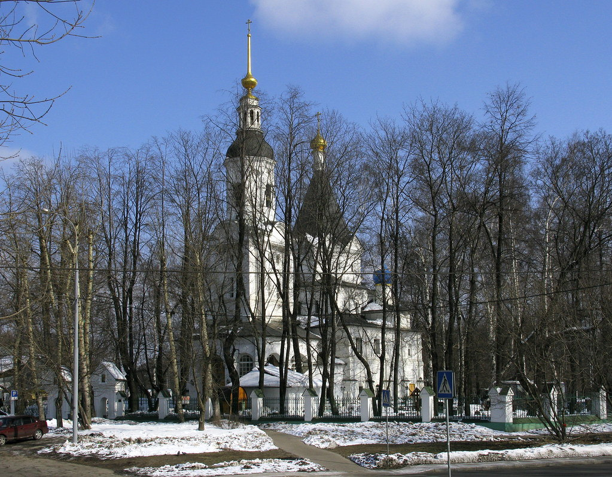
Построена в 1644–1646 годах в усадьбе Вешняки боярином Ф. И. Шереметевым. Образец шатрового зодчества середины XVII века: высокий шатёр, колокольня, белокаменный декор. В усадьбе бывали цари; в XIX веке — владение Шереметевых. В советское время храм закрывали; возвращён Церкви в 1990-х; проведена реставрация. Памятник усадебного храма середины XVII века; шатёр и колокольня — образец допетровского зодчества; усадьба Вешняки — исторический ансамбль.
Дворец Меншикова — первый каменный дворец Санкт-Петербурга на Университетской набережной. Возведён в 1710–1714 годах для первого губернатора города Александра Меншикова; над проектом работали Джованни Мария Фонтана, Иоганн Георг Шедель и другие мастера. Парадные залы и голландская печь отражают ранний петровский вкус. Начало каменного Петербурга и музей раннего XVIII века.
Адрес: Санкт-Петербург | Стиль: Петровское барокко (начало XVIII в.) | Период: 1722–1742
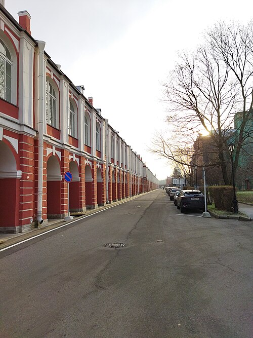
Здание Двенадцати коллегий — административный центр реформ Петра I на Стрелке Васильевского острова. Строилось в 1722–1742 годах по проекту Доменико Трезини; фасад длиной около 400 метров объединял министерства империи. Сегодня здесь главное здание Санкт-Петербургского государственного университета. Ключевой памятник петровского барокко и символ российской государственности.
Задумана Петром I как «кунсткамера» редкостей для просвещения; коллекции антропологии и этнографии стали основой музея. Здание пережило пожары и реставрации Символ научного Петербурга эпохи Просвещения.
Адрес: Санкт-Петербург | Стиль: Петровское барокко (начало XVIII в.) | Период: 1710–1714
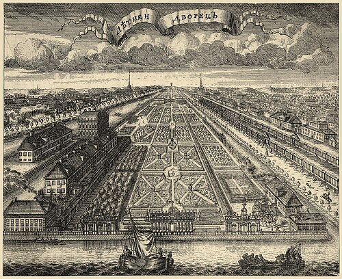
Летний дворец Петра I — скромная царская резиденция на набережной Фонтанки. Возведён в 1710–1714 годах по проекту Доменико Трезини для первого петербургского периода жизни императора. Двухэтажный каменный дом с мезонином сохранил интерьеры и мебель эпохи Петра. Один из старейших сохранившихся дворцов Петербурга и памятник петровского барокко.
Адрес: spb | Стиль: Петровское барокко (начало XVIII в.)
Летний сад — старейший регулярный парк Петербурга, заложенный при Петре I на острове между Невой и Фонтанкой. Первые работы начались в 1704 году; с 1712 года планировку вёл Жан-Батист Леблон по образцу Версаля. Прямые аллеи, боскеты, фонтаны и скульптуры создавали парадное пространство для двора; ограда с решёткой Кваренги завершила ансамбль в 1784 году. Парк связывает петровский барокко с классицизмом и хранит одну из лучших коллекций садовой скульптуры России.
Адрес: Заячий остров | Стиль: Петровское барокко (начало XVIII в.) | Период: 1703–1706
Заложена Петром I; долгое время служила политической тюрьмой. Петропавловский собор — усыпальница многих императоров. Крепостные валы и бастионы сохраняют силуэт «короны» на Неве Точка отсчёта истории Санкт-Петербурга и память о династии Романовых.
Адрес: г. Петергоф, Дворцовый парк | Стиль: Елизаветинское барокко (середина XVIII в.) | Период: Конец XIX века
Задуман Петром I как «русский Версаль»; ансамбль разрастался при последующих монархах. В годы войны пострадал, затем восстанавливался Объект Всемирного наследия; эталон дворцово-паркового искусства Северной Европы.
Адрес: Невский проспект, 17 | Стиль: Елизаветинское барокко (середина XVIII в.) | Период: Конец XIX века
Дворец Строгановых на Невском проспекте — городской особняк знатного рода. Перестроен в 1752–1754 годах Бартоломео Растрелли для графа Сергея Строганова; парадная лестница, Минералогический кабинет и парадные залы сохранили роскошь XVIII века. Сегодня — филиал Русского музея. Редкий образец дворцовой архитектуры середины XVIII века в центре Петербурга.
Зимний дворец — главная императорская резиденция в Санкт-Петербурге и ядро Эрмитажа. Построен в 1754–1762 годах Бартоломео Растрелли на Дворцовой набережной; зелёные фасады с белыми колоннами и золочёные шпили определяют ансамбль Дворцовой площади. После 1917 года дворец стал музеем мирового значения. Вершина елизаветинского барокко и символ имперской столицы на Неве.
Павловский дворец — классический дворец-загородная резиденция к югу от Петербурга, центр ансамбля Павловска. Строительство велось в 1782–1825 годах для великих князей Павла и Марии Фёдоровны; главные авторы — Чарльз Камерон, Винченцо Бренна, Андрей Воронихин. Дворец на высоком берегу Славянки окружён парком в духе английского пейзажа. Интерьеры и парк образуют единый музей классицизма; ансамбль внесён в список Всемирного наследия ЮНЕСКО.
Адрес: Санкт-Петербург | Стиль: Елизаветинское барокко (середина XVIII в.) | Период: 1748–1764
Смольный собор — кафедральный храм Смольного воспитательного дома, шедевр Растрелли. Строительство велось в 1748–1764 годах; голубые фасады с белым декором и колокольня высотой около 93 метров образуют один из узнаваемых силуэтов Петербурга. Собор завершён только в XIX веке. Образец пышного елизаветинского барокко на берегу Невы.
Адрес: Казанская площадь, 2 | Стиль: Ранний классицизм (вторая половина XVIII в.) | Период: 1860–1904
Возведён по проекту А. Н. Воронихина на месте каменной церкви; после революции здание использовалось не только как культовое. Возвращено верующим в 1990-х; ведутся службы и экскурсии Архитектурная доминанта Невского проспекта и важная точка городской религиозной жизни.
Адрес: spb | Стиль: Ранний классицизм (вторая половина XVIII в.) | Период: 1837–1840
Михайловский замок — резиденция императора Павла I, возведённая в конце XVIII века. Строительство велось в 1797–1801 годах по проектам Винченцо Бренны, Василия Баженова и Ивана Старова. Замок окружён каналами и напоминает крепость; в центре — восьмиугольный двор. Павел I переехал сюда из Зимнего дворца и был убит в 1801 году в собственных покоях. Сегодня в здании — филиал Русского музея. Редкий образец «костюмированной» архитектуры рубежа XVIII–XIX веков в центре Петербурга.
Адрес: spb | Стиль: Ранний классицизм (вторая половина XVIII в.) | Период: 1754–1762
Таврический дворец — строгий классицистический ансамбль Ивана Старова на Шпалерной улице. Возведён в 1783–1789 годах для князя Григория Потёмкина; за парадным двором — Таврический сад. Символ петербургского классицизма и политической истории начала XX века.
Адрес: Красногорский р-н, пос. Архангельское | Стиль: Ранний классицизм (вторая половина XVIII в.)
Усадьба с XVIII века принадлежала Голицыным, затем Юсуповым. Дворец в стиле классицизма, парк с театром Гонзаги, оранжереи. С 1919 года — музей; коллекции живописи, скульптуры, фарфора. Жемчужина подмосковных усадеб; памятник садово-паркового и дворцового искусства; музей с мировыми коллекциями (в 5 км от МКАД).
11. Зрелый русский классицизм (конец XVIII — начало XIX вв.)
Адрес: spb | Стиль: Зрелый русский классицизм (конец XVIII — начало XIX вв.) | Период: 1895
Дом-музей А. С. Пушкина на Арбате — мемориальный особняк в стиле ампира. Построен в 1814 году; с 1986 года — музей поэта. Интерьеры восстановлены по документам XIX века. Важный адрес московской литературной топографии.
Адрес: Исаакиевская площадь, 4 | Стиль: Зрелый русский классицизм (конец XVIII — начало XIX вв.)
Строился по проекту О. Монферрана на месте прежних исаакиевских церквей; в советское время — антирелигиозный музей, затем реставрация. Сегодня совмещены богослужение и музейный режим Городская доминанта и образец инженерной смелости XIX века.
Адрес: ул. Воздвиженка, 3/5 | Стиль: Ампир (первая треть XIX в.)
Российская государственная библиотека — крупнейшее книгохранилище страны на Воздвиженке. Основана в 1862 году как Румянцевский музей; главное здание на Воздвиженке возводилось в 1928–1958 годах. Фонды насчитывают более 47 млн единиц хранения. Национальное книгохранилище и памятник монументальной архитектуры сталинского периода.
Адрес: Москва | Стиль: Ампир (первая треть XIX в.) | Период: 1829–1834
Триумфальные ворота на Кутузовском проспекте — монумент победе 1812 года. Первые ворота у Тверской заставы возвёл О. И. Бове в 1829–1834 годах; нынешняя копия на Поклонной горе открыта в 1968 году по обмерам оригинала. Образец русской триумфальной архитектуры и символ Отечественной войны.
Адрес: ул. Большая Никитская, 36 | Стиль: Ампир (первая треть XIX в.)
Строительство с 1798 года, освящён в 1848; возведён на месте старой церкви Вознесения. Выдающийся образец ампира: ротонда с колоннадой, строгие формы. 18 февраля (2 марта по н. ст.) 1831 года здесь венчались А. С. Пушкин и Н. Н. Гончарова; храм — место паломничества поклонников поэта. В 1937 году закрыт, возвращён Церкви в 1990 году; отреставрирован. Храм венчания Пушкина и Гончаровой (1831); выдающийся образец ампира с ротондой и колоннадой. Один из главных литературно-исторических храмов Москвы; место паломничества поклонников Пушкина.
Адрес: Крутицкая улица, 17 | Стиль: Русско-византийский стиль (середина XIX в.)
Возник в XIII веке как подворье Сарайской (позже Крутицкой) епархии — епископы окормляли русских в Золотой Орде. В XV–XVII веках построены Успенский собор, Крутицкий терем с изразцовым убранством (1693–1694). В 1785 году епархия упразднена; постройки использовались под казармы и военные склады. Реставрация с 1950-х; с 1991 года — действующее подворье Патриарха, богослужения в Успенском соборе. Уникальный памятник древнерусского зодчества; Крутицкий терем — шедевр изразцового декора XVII века; малоизвестный уголок старой Москвы у Таганки; резиденция епископов Сарских и Подонских в прошлом.
Адрес: Москва | Стиль: Русско-византийский стиль (середина XIX в.) | Период: 1839–1883
Храм Христа Спасителя — главный храм Русской Православной Церкви на берегу Москвы-реки. Первый храм заложен в 1839 году по проекту К. А. Тона в память победы 1812 года; освящён в 1883 году. В 1931 году собор взорван; на его месте планировали Дворец Советов. Восстановлен в 1990–2000 годах как точная копия первоначального здания. Символ духовного возрождения и крупнейший православный храм столицы.
Адрес: Большая Никитская ул., 41 | Стиль: Эклектика (вторая половина XIX в.)
Дом Рукавишникова на Большой Никитской — городская усадьба с парадным фасадом в эклектике. Усадьба известна с XVIII века; каменный особняк перестраивался в XIX веке и принадлежал роду Рукавишниковых. Сохранились фасад с арочными окнами и элементы интерьеров. Памятник усадебной архитектуры на одной из старинных улиц центра.
Адрес: Тверской бульвар, 22 | Стиль: Эклектика (вторая половина XIX в.)
Новое здание МХАТ построено в 1973 году на Тверском бульваре по проекту В. С. Кубанова и др.; историческое здание Художественного театра (Камергерский пер.) осталось за МХАТ им. Чехова. После разделения МХАТ в 1987 году в здании на бульваре обосновался МХАТ им. Горького (худрук — Т. В. Доронина). Большая сцена и малая; репертуар — классика и современная драма. МХАТ им. Горького — один из главных театров страны; памятник театральной архитектуры 1970-х; символ преемственности традиций Художественного театра; сцена на Тверском бульваре.
Адрес: Воздвиженка, 16 | Стиль: Эклектика (вторая половина XIX в.)
Особняк А. А. Морозова на Воздвиженке — один из самых ярких домов московской эклектики. Построен в 1895–1899 годах по проекту В. А. Каменского. Необычный фасад с башней и розовой отделкой; по легенде, императрица запретила строить «подобное» в Москве. Символ модерна и эклектики на Воздвиженке.
Адрес: Большая Якиманка, 43 | Стиль: Эклектика (вторая половина XIX в.)
Построен в 1883–1891 годах для купца И. Н. Игумнова; авторство часто связывают с Ф. О. Шехтелем. Богатый резной декор, псевдорусские мотивы. С 1938 года — резиденция посла Франции. Один из самых декоративных особняков Москвы; «русский стиль» на Якиманке.
Адрес: Спиридоновка, 10 | Стиль: Эклектика (вторая половина XIX в.)
Городская усадьба на Спиридоновке связана с именем мецената С. И. Мамонтова. Каменный особняк с декоративным фасадом; часть исторического квартала у Патриарших. Памятник архитектуры; связь с культурной историей Москвы.
Адрес: ул. Дольская, 1 | Стиль: Псевдорусский стиль (вторая половина XIX в.)
Большой дворец достраивал М. Ф. Казаков после отставки В. И. Баженова; стиль псевдоготики сохранён. Долгое время стоял в руинах; полная реставрация завершена в 2007 году. Сейчас в нём экспозиции и концертный зал музея-заповедника Царицыно. Главное здание музея-заповедника Царицыно; образец екатерининской псевдоготики; восстановленный дворец после реставрации 2007 года.
Адрес: Санкт-Петербург | Стиль: Псевдорусский стиль (вторая половина XIX в.) | Период: 1883–1907
Храм Спаса на Крови — памятник «русского стиля» на канале Грибоедова, возведённый Альфредом Парландом. Заложен в 1883 году на месте покушения на императора Александра II (1 марта 1881 года). Строительство завершено в 1907 году; пять куполов и яркая керамическая отделка фасадов напоминают московские храмы XVII века. Интерьеры украшены мозаиками по эскизам В. М. Васнецова и других художников. Один из самых узнаваемых храмов Петербурга и крупнейших мозаичных ансамблей Европы.
7 July] 1893 – 14 April 1930) was a Russian poet, playwright, artist, and actor. Шедевр московского модерна; синтез архитектуры и декоративного искусства. Построен в 1905–1907 годах по проекту С. В. Малютинa и Н. К. Жукова для инженера П. Н. Перцова. Доходный дом в неорусском стиле с керамическими панно по эскизам Малютинa.
Особняк спроектирован и построен В. М. Васнецовым в 1894 году в неорусском стиле. Художник жил и работал здесь до 1926 года. С 1953 года — мемориальный музей с подлинной мебелью и этюдами. Памятник неорусского стиля; дом-музей художника-сказочника.
Построен в 1862–1864; нынешнее здание — 1913–1940 по проекту А. В. Щусева. Башня в стиле казанского кремля; мозаики Рериха. Поезда на Казань, Уфу, Среднюю Азию. Памятник архитектуры; башня Сююмбике; мозаики Рериха.
Адрес: Санкт-Петербург | Стиль: Неорусский стиль (рубеж XIX–XX вв.) | Период: 1911–1914
Собор Феодоровской иконы Божией Матери в Царском Селе — храм неорусского стиля для императорской семьи. Возведён в 1911–1914 годах по проекту С. С. Кричинского рядом с Александровским дворцом. Пятоглавый храм с кирпичным декором и шатровыми главками задумывался как домовая церковь Романовых; в советское время был разрушен и восстановлен в 2010-х. Редкий образец позднего неорусского стиля императорского пригорода.
Адрес: Москва | Стиль: Неорусский стиль (рубеж XIX–XX вв.) | Период: 1906
Государственная Третьяковская галерея — музей русского искусства с фасадом по эскизу В. М. Васнецова. Основана П. М. Третьяковым в 1856 году; здание в Лаврушинском переулке расширялось в 1900–1906 годах в неорусском стиле. Фасад Васнецова — один из узнаваемых символов Замоскворечья.
Адрес: Москва | Стиль: Неорусский стиль (рубеж XIX–XX вв.) | Период: 1902–1904
Ярославский вокзал на Комсомольской площади — главный «сибирский» вокзал Москвы в неорусском стиле. Первый каменный вокзал вырос здесь в 1860-е; нынешнее здание перестроено в 1902–1904 годах по проекту Ф. О. Шехтеля, с участием А. В. Щусева. Фасад с килевидными крышами, арками и майоликой напоминает древнерусский терем; отсюда отправляется Транссибирский экспресс. Сказочный силуэт Шехтеля и начало пути на восток страны.
Витебский вокзал — один из старейших вокзалов России и шедевр петербургского модерна. Нынешнее здание 1904 года с витражами и кованым декором сохранило атмосферу рубежа веков; отправление в Пушкин и Павловск. Образец модерна в транспортной архитектуре.
Гостиница построена в 1899–1905 годах по инициативе Саввы Мамонтова; авторы проекта — В. Ф. Валькот, Л. Н. Кекушев, В. В. Воейков. Мозаика «Принцесса Грёза» и панно на фасаде выполнены по эскизам М. А. Врубеля и А. Я. Головина. В 1918 в банкетном зале проходили заседания V Всероссийского съезда Советов; здесь приняли первую Конституцию РСФСР. После реставрации 1990–2010-х — премиальный отель. Метрополь — выдающийся памятник модерна с керамическим и майоликовым декором на фасаде. Историческая гостиница у Театральной площади; мозаики Врубеля и Головина — одна из визитных карточек московской архитектуры.
Особняк начала XX века на Тверской; построен для Е. И. Козицкой. Асимметричный фасад с башенкой и декоративной кладкой — характерный пример московского модерна на главной улице. Редкий особняк на Тверской; памятник модерна в центре города.
Дом компании «Зингер» на Невском проспекте — один из символов петербургского модерна. Построен в 1902–1904 годах по проекту П. Ю. Сюзора для российского представительства фирмы швейных машин. Стеклянный купол с золочёным орлом поднимается над угловым участком; с 1938 года здание известно как «Дом книги». Доминианта Невского проспекта и памятник коммерческого модерна.
Построен в 1897–1899 годах по проекту Ф. О. Шехтеля для З. Г. Морозовой. Асимметричный объём, башня, декоративная кладка — характерные черты московского модерна. Памятник модерна на Спиридоновке; работа Шехтеля.
Особняк Рябушинского на Малой Никитской — один из главных шедевров московского модерна Ф. О. Шехтеля. Построен в 1900–1903 годах для купца С. П. Рябушинского. Асимметричный фасад, витражи и знаменитая «лестница-волна» внутри; интерьеры сохранили декор модерна. С 1965 года здесь музей-квартира М. Горького. Образец синтеза архитектуры, декоративного искусства и быта рубежа веков.
Адрес: Охотный ряд, 1 | Стиль: Неоклассицизм (начало XX в.)
Построено в 1932–1935 годах по проекту А. Я. Лангмана для Совета труда и обороны (СТО). Советский неоклассицизм: колонны, рустовка, симметричный фасад. Здание стоит в центре города, напротив входа в Александровский сад. До 1993 года здесь заседал Верховный Совет СССР и РСФСР; с 1994 года — Государственная Дума РФ; рядом — здание Совета Федерации. Государственная Дума — здание парламента России; символ законодательной власти; памятник советской официальной архитектуры 1930-х; ключевая точка политической карты Москвы.
Адрес: Староконюшенный пер., 32 | Стиль: Неоклассицизм (начало XX в.)
Особняк на Староконюшенный переулке связан с именем врача и филантропа Боткина. Построен в начале XX века; богатый декор фасада, сохранившиеся интерьеры. Памятник архитектуры у Арбата; часть исторической застройки.
Адрес: ул. Остоженка, 17 | Стиль: Неоклассицизм (начало XX в.)
Особняк начала XX века на Остоженке; построен для купца Второва. Богатый декор фасада, сохранившиеся элементы интерьеров. Памятник архитектуры на Остоженке; часть «золотой мили».
Адрес: Москва | Стиль: Неоклассицизм (начало XX в.) | Период: 1904–1906
Доходный дом И. П. Исакова — образец московского модерна Льва Кекушева. Построен в 1904–1906 годах на Большой Никитской; асимметричный фасад, эркеры и скульптурный декор. Памятник эпохи «золотой мили».
Адрес: Исаакиевская пл., 6 | Стиль: Неоклассицизм (начало XX в.)
Городской особняк Мариинский дворец на Исаакиевская пл., 6 — памятник архитектуры в стиле неоклассицизм. Построен в XVIII–XX веках; сохранился парадный фасад и элементы исторической застройки центра Санкт-Петербурга. Памятник архитектуры Санкт-Петербурга; часть «особнячного» наследия города — Мариинский дворец.
Дом Мельникова — шедевр конструктивизма и личная мастерская архитектора. Построен в 1927–1929 годах на Кривоарбатском переулке; два пересекающихся цилиндра с шестиугольными окнами. Один из главных символов московского авангарда.
Адрес: ул. Серафимовича, 2 | Стиль: Авангард (1920–1930‑е гг.)
Жилой комплекс построен в 1927–1931 годах по проекту Б. М. Иофана для высшего партийного и советского руководства. В 505 квартирах жили Ворошилов, Микоян, Хрущёв, Косыгин; здесь же — кинотеатр «Ударник», универмаг, поликлиника, столовая. В 1930-х многие жильцы пали жертвами репрессий. С 1989 года в одном из подъездов работает музей «Дом на набережной», рассказывающий о судьбах обитателей дома. Дом на набережной — выдающийся памятник конструктивизма и символ жизни советской номенклатуры 1930-х годов. Монументальный объём у Болотной набережной сохранил внутреннюю инфраструктуру (кинотеатр, магазины) и остаётся жилым.
Построено в 1925–1927 годах по проекту Г. Б. Бархина для газеты «Известия ВЦИК» (позже «Известия»). Угловое здание в стиле конструктивизма: остекление, чёткие объёмы, ленточные окна. Долгие годы здесь размещалась редакция одной из главных газет страны; в 2010-х здание реконструировано, часть помещений отдана под офисы. Здание «Известий» — памятник конструктивизма; символ советской прессы; важная постройка площади Пушкина и Тверской; образец газетного здания 1920-х годов.
Адрес: ул. Мясницкая, 39 | Стиль: Авангард (1920–1930‑е гг.)
Построено в 1928–1936 годах по проекту Ле Корбюзье и П. Жаннере для Центрального союза потребительских обществ (Центросоюз). Единственная реализованная в России постройка Ле Корбюзье: свободная планировка, ленточные окна, опоры-пилоти, плоская крыша. Здание стало эталоном международного модернизма; сейчас здесь Росстат и другие ведомства. Здание Центросоюза — единственная постройка Ле Корбюзье в России; памятник конструктивизма и международного модернизма; эталон офисного здания XX века; объект культурного наследия на Мясницкой.
Адрес: Москва | Стиль: Авангард (1920–1930‑е гг.) | Период: 1922
Шуховская башня — гиперболоидная конструкция Владимира Шухова на Шаболовке. Возведена в 1922 году как радиопередающая башня; сетчатая стальная оболочка стала эталоном инженерной эстетики XX века. Памятник мировой инженерной мысли.
Конструктивизм ставит конструкцию и функцию выше декора; доминируют стекло, бетон и экспериментальная планировка.
Клубы, жилые комплексы и общественные здания проектируют братья Веснины и Гинзбург; Илья Голосов — ЗИЛ и клуб им. Русакова — динамичные конструктивистские объёмы.
Стиль отражает утопию коллективного труда и индустриализации страны.
Главные архитекторы
Братья Веснины — Александр, Леонид и Виктор — Дом правительства и проекты рабочих клубов.
Моисей Гинзбург — Разработал типологию социалистического жилья и принципы функционализма.
Адрес: Москва | Стиль: Конструктивизм (1920–1930‑е гг.) | Период: 1927–1929
ДК имени Зуева — клуб работников текстильной фабрики в духе конструктивизма. Спроектирован Ильёй Голосовым в 1927–1929 годах; стеклянный цилиндр на массивном постаменте. Один из самых узнаваемых клубов Москвы.
Адрес: Москва | Стиль: Конструктивизм (1920–1930‑е гг.) | Период: 1927–1929
ДК имени Русакова — клуб Мельникова для работников коммунального хозяйства. Три консольных объёма зрительного зала вынесены на фасад; внутри — зал на 800 мест. Шедевр конструктивизма на Стромынке.
Адрес: Москва | Стиль: Конструктивизм (1920–1930‑е гг.) | Период: 1928–1930
Дом Наркомфина — жилой комплекс Моисея Гинзбурга и Игнатия Милиниса на Новинском бульваре. Построен в 1928–1930 годах как эксперимент коллективного быта: галереи, «трансформируемые» квартиры, разделение жилых и общественных функций. Один из главных памятников конструктивизма в мире; объект культурного наследия федерального значения.
Здание «Дома книги» построено в 1930-е годы для издательства; строгая геометрия фасада, большие витрины, функциональная планировка — типичный пример московского конструктивизма. Памятник архитектуры 1930-х; часть истории книгоиздания в СССР.
Адрес: ул. Большая Лубянка, 1/15 | Стиль: Конструктивизм (1920–1930‑е гг.)
Здание на Большой Лубянке построено для спортивного общества «Динамо»; сочетает черты конструктивизма и позднего ампира. Сохранился парадный фасад и спортивная символика. Памятник архитектуры 1930-х годов; связь с историей советского спорта.
Opened in 1935 with one 11-kilometre (6. Шедевр метростроя и ар-деко; одна из красивейших станций мира. Мозаики Дейнеки под куполами — образец синтеза искусства и архитектуры. Символ советского метро и визитная карточка московского подземелья. Открыта в 1938 году в составе второй очереди метро по проекту А. Н. Душкина. Колонны из нержавеющей стали и купола с мозаиками А. А. Дейнеки на тему «Сутки страны Советов» (небо, самолёты, парашютисты). В 1939 году проект получил Гран-при Всемирной выставки в Нью-Йорке. Во время войны станция использовалась как бомбоубежище и место проведения мероприятий.
Построен в 1900 году; нынешнее здание — 1987. Поезда на Волгоград, Астрахань, Донбасс; аэроэкспресс в Домодедово. Южное направление; аэроэкспресс в Домодедово; центр Москвы.
Открыта в 1952 году как часть Кольцевой линии. Мозаики посвящены сельскому хозяйству и изобилию (ВДНХ рядом). Первоначально называлась «Ботанический сад». Своды, мрамор, люстры в духе «подземных дворцов». Станция у ВДНХ и Ботанического сада; тема изобилия и труда. Памятник послевоенного метростроя и сталинского стиля.
Адрес: Москва | Стиль: Ар-деко (1920–1930‑е гг.) | Период: 1934–1940
Центральный театр Красной Армии (ЦТКА) — монумент ар-деко и сталинского ампира. Построен в 1934–1940 годах; пятиконечная звезда над залом и монументальный интерьер. Главная сцена военно-патриотического репертуара.
Гостиница «Арктика» в Мурманске — северный памятник советского модернизма 1930-х годов. Возведена в 1933–1936 годах как крупнейшая гостиница Заполярья; массивный объём и сдержанный декор отражают климатические и индустриальные условия Кольского края. Здание долгое время задавало архитектурный облик города. Редкий пример постконструктивизма за Полярным кругом.
Адрес: Москва | Стиль: Постконструктивизм (1930‑е гг.) | Период: 1930–1937
Дворец культуры ЗИЛ — монумент переходного периода от конструктивизма к неоклассике 1930-х годов. Спроектирован братьями Весниными в 1930–1937 годах для рабочих автозавода. Объёмный зал на колоннах, строгая геометрия фасада и парадная лестница сочетают авангардные приёмы с монументальным характером сталинской эпохи. Важный памятник постконструктивизма и клубного зодчества.
Адрес: ул. Поварская, 33 | Стиль: Постконструктивизм (1930‑е гг.)
Особняк на Поварской построен в начале XX века. С 1920-х годов здание связано с обществом политкаторжан; сохранился парадный фасад и элементы интерьеров. Памятник архитектуры на Поварской; связь с историей революционного движения.
Адрес: Москва | Стиль: Постконструктивизм (1930‑е гг.) | Период: 1934
Жилой дом на Моховой улице — образец московского постконструктивизма 1934 года. Автор проекта — Иван Жолтовский; фасад сочетает строгую сетку окон с классическими пропорциями и лаконичным декором. Дом демонстрирует поиски советских архитекторов между авангардом и неоклассическим возрождением. Показательный жилой дом эпохи постконструктивизма.
Построен в 1870 году; нынешнее здание — 1907–1912 (модерн), реконструкция 1938–1940. Поезда на Минск, Смоленск, Европу; аэроэкспресс в Шереметьево. Западное направление; аэроэкспресс; памятник архитектуры.
Всероссийская сельскохозяйственная выставка открыта в 1939 году. После войны комплекс расширен, добавлены павильоны союзных республик. С 1959 — Выставка достижений народного хозяйства (ВДНХ). С 2010-х — масштабная реставрация павильонов и фонтанов. Крупнейший выставочный и парковый комплекс России; памятник советской архитектуры и символ достижений страны; зона отдыха и культуры.
Построена в 1948–1954 годах по проекту М. В. Посохина и А. А. Мндоянца. Жилая высотка (176 м со шпилем и звездой); в нижних этажах — магазины, кинотеатр «Пламя», почта. Одна из семи сталинских высоток; квартиры предназначались для авиаторов, учёных, партийной элиты. Дом до сих пор жилой; часть помещений занята офисами и коммерцией. Высотка на Кудринской — жилая сталинская высотка; образец элитного жилья середины XX века; памятник архитектуры и символ Кудринской площади; одна из самых узнаваемых высоток Москвы.
Главное здание МГУ на Воробьёвых горах — одна из семи сталинских высоток и символ советского неоклассицизма. Спроектировано Львом Рудневым, строительство велось 1949–1953 годов. 36-этажная башня со шпилом завершает университетский ансамбль; фасады облицованы гранитом и терракотой, интерьеры украшены мозаиками и лепниной. Высотка задаёт силуэт юго-запада Москвы и эпоху послевоенного «сталинского ампира».
Главный павильон ВДНХ — центральный монумент сталинского ампира на выставочном комплексе. Построен в 1954 году по проекту Георгия Щуко и Евгения Столярова. Портик с барельефом и высокие аркады образуют парадную ось площади Колхозов; интерьер отделан мрамором и лепниной. Символ послевоенного представительства достижений СССР.
Построена в 1950 году в стиле сталинского ампира по проекту А. Б. Борецкого и др. В составе комплекса — легендарный ресторан «Яр», известный с 1826 года (на историческом месте у Триумфальной площади, затем перенесён). Здесь бывали Чехов, Шаляпин, Горький, купеческая и артистическая Москва. Гостиница и ресторан продолжают традицию светской жизни и приёмов. Гостиница «Советская» — памятник советской гостиничной архитектуры на Ленинградском проспекте; символ преемственности «Яра» и места светской жизни; сочетание сталинского ампира и исторического ресторана.
Кольцевая «Комсомольская» — парадная станция московского метро в стиле сталинского неоклассицизма. Открыта в 1952 году по проекту Алексея Щусева. Зал украшен мозаиками Павла Корина на темы военной славы России, бронзовыми люстрами и мраморными колоннами; своды напоминают зал дворца. Образцовая «дворцовая» станция первого кольца.
Дом на площади Гагарина — жилой корпус сталинского ампира на Ленинском проспекте. Возведён в 1949–1955 годах; портики, башенки и парадный масштаб типичны для послевоенной застройки. Часть ансамбля площади Гагарина.
Застройка Кутузовского проспекта — ансамбль сталинского ампира 1940–1950-х годов. Высотные жилые дома, посольства и общественные здания формируют парадную магистраль запада Москвы. Силуэт проспекта — визитная карточка эпохи.
25. Советский неоклассицизм (возрождение, 1940–1950‑е)
Адрес: ул. Варварка, 6 | Стиль: Типовое индустриальное домостроение (1950–1980‑е)
Открыт в 2017 году в парке «Зарядье». Консольная конструкция без опор над Москвой-рекой; выступает на 70 м. Вид на Кремль, Васильевский спуск. Символ нового Зарядья; лучший вид на Кремль; бесплатный доступ.
Адрес: Москва | Стиль: Типовое индустриальное домостроение (1950–1980‑е) | Период: с 1978
Серия П-44 — распространённый тип панельного дома позднего советского периода с улучшенными планировками. Освоена с конца 1970-х годов; девятиэтажные корпуса получили более просторные кухни и комнаты по сравнению с ранними хрущёвками. П-44 формировала жилую среду новых микрорайонов и до сих пор определяет облик многих районов Москвы. Показатель эволюции типового жилищного строительства СССР.
Адрес: Москва и др. | Стиль: Типовое индустриальное домостроение (1950–1980‑е) | Период: с 1958
Серия К-7 — один из первых массовых типовых панельных домов в СССР, освоенных с конца 1950-х годов. Четырёхэтажные секции собирались из керамзитобетонных панелей на заводах домостроения; планировки были унифицированы, а фасады получили характерную горизонтальную разбивку. Серия стала символом хрущёвской массовой жилищной программы и определила облик спальных районов Москвы и других городов. Типовой образец индустриального домостроения 1950–1980-х.
Микрорайон Черёмушки — один из первых крупных жилых массивов Москвы, заложенный в эпоху массового панельного строительства. Строительство велось в 1956–1959 годах по генеральному плану с квартальной застройкой, школами, магазинами и транспортной инфраструктурой. Район стал образцом комплексной застройки и символом решения жилищной проблемы послевоенной столицы. Ранний эталон советского микрорайона.
Адрес: пр. Мира, 123б | Стиль: Типовое индустриальное домостроение (1950–1980‑е)
Создана В. И. Мухиной для павильона СССР на Всемирной выставке в Париже 1937 года. Высота 24,5 м; нержавеющая сталь. С 2009 — на постаменте у северного входа ВДНХ. Символ советской эпохи; шедевр Веры Мухиной; визитная карточка ВДНХ.
Адрес: ул. Новый Арбат, 36 | Стиль: Советский модернизм (1960–1980‑е гг.)
Комплекс построен в 1963–1970 годах для Секретариата Совета экономической взаимопомощи (СЭВ) — организации социалистических стран. Несколько высотных корпусов-«книжек» с остеклёнными фасадами формируют силуэт Нового Арбата. После роспуска СЭВ в 1991 году здание передано правительству Москвы; здесь размещаются мэрия, префектура и административные службы. Здание СЭВ — символ Нового Арбата и образец советского модернизма 1960-х. Резиденция городской власти; узнаваемые «книжки» — одна из доминант центра Москвы.
Адрес: Москва | Стиль: Советский модернизм (1960–1980‑е гг.) | Период: 1960-е
Здание ТАСС — монумент советского модернизма на Тверской улице. Построено в 1960-е годы по проекту Дмитрия Чечулина; строгий объём с ритмом вертикальных пилонов. Символ советской информационной системы.
Адрес: Тверская ул., 13 | Стиль: Советский модернизм (1960–1980‑е гг.)
Построено в 1946 году по проекту Д. Н. Чечулина для Московского городского совета (Моссовет). При расширении Тверской в 1939 году историческое здание Моссовета (XVIII в.) передвинули вглубь квартала на 13,6 м — уникальная операция. С 1993 года — резиденция мэра и правительства Москвы; фасад в духе советского неоклассицизма. Здание мэрии — резиденция мэра Москвы; символ городской власти; памятник советского неоклассицизма на главной улице города; история с передвижкой здания — пример инженерного искусства.
Адрес: novosibirsk | Стиль: Советский модернизм (1960–1980‑е гг.)
Новосибирский театр оперы и балета был основан в 1945 году, после Второй мировой войны, в рамках культурного возрождения города. Театр был спроектирован архитектором Александром Крячковым и с тех пор стал одним из крупнейших оперных театров в России. На протяжении десятилетий он принимал множество престижных выступлений и стал значимой площадкой как для отечественных, так и для международных артистов. Культурно Новосибирский театр оперы и балета играет жизненно важную роль в художественной жизни города и региона, служа платформой как для традиционных, так и для современных представлений. Он вносит вклад в культурное наследие Новосибирска, способствуя любви к исполнительскому искусству среди жителей и гостей города. Театр также является символом стойкости города и приверженности искусству, отражая богатое культурное многообразие Сибири.
Адрес: moscow | Стиль: Советский модернизм (1960–1980‑е гг.)
Панорамная палуба над Москвой-рекой в парке «Зарядье» (открыт 2017). «Парящий мост» — консольная конструкция без опор над водой; вид на Кремль, Васильевский спуск, храм Христа Спасителя. Лучший вид на Кремль с воды; «Парящий мост» — символ нового Зарядья; бесплатный доступ.
28. Региональное советское зодчество (1960–1980‑е)
Адрес: Кутузовский пр., 2/1 | Стиль: Региональное советское зодчество (1960–1980‑е)
Построена в 1953–1957 годах; одна из семи сталинских высоток. Высота 206 м; 34 этажа. Расположена на Кутузовском проспекте у Москвы-реки. Сталинская высотка; символ послевоенной Москвы; видовая доминанта.
Адрес: Санкт-Петербург | Стиль: Региональное советское зодчество (1960–1980‑е) | Период: 1967
Дворец спорта «Юбилейный» на Петроградской стороне — один из главных спортивных залов Ленинграда–Петербурга. Построен в 1967 году по проекту Александра Васильева, Юрия Шеваржинского и Владимира Кубинского. Круглый в плане зал на 7 000 зрителей обслуживал хоккей, концерты и массовые мероприятия; фасад сочетает стекло и бетонные кольца в духе советского модернизма. Символ ленинградского спорта и концертной жизни 1960–1980-х.
Адрес: Москва | Стиль: Региональное советское зодчество (1960–1980‑е) | Период: 1956
Стадион «Лужники» — главная спортивная арена СССР и России. Открыт в 1956 году как Центральный стадион имени В. И. Ленина в комплексе на Ленинских горах. Большая спортивная арена, плавательный бассейн и трибуны образуют ансамбль у Москвы-реки; стадион неоднократно реконструировался, сохраняя роль центра крупнейших соревнований. Ключевой памятник регионального советского спортивного зодчества.
Адрес: Новосибирск | Стиль: Региональное советское зодчество (1960–1980‑е) | Период: 1931–1945
Новосибирский театр оперы и балета — крупнейший театр Сибири и символ советского культурного освоения региона. Строительство велось в 1931–1945 годах по проекту Александра Крячкова; монументальный неоклассический объём с колоннадой доминирует над центром города. Открытие театра стало событием всесоюзного значения. Важнейший образец регионального советского зодчества.
Создан в 2013 году на базе Театра им. Гоголя под руководством Кирилла Серебренникова. Современная режиссура, эксперимент, синтез театра и кино. Театр Кирилла Серебренникова; современная режиссура; эксперимент.
Театр «Современник» — одна из главных драматических сцен Москвы, основанная в эпоху «оттепели». Создан в 1956 году как студия молодых актёров; с 1964 года размещается в здании на Чистопрудном бульваре. Репертуар сочетает классику и современную драматургию; театр стал символом обновления сценической жизни 1960-х. Культовая площадка московского театра второй половины XX века.
Построен в 2000-х годах в стиле древнерусского зодчества как культурно-развлекательный комплекс. Деревянные башни, вернисаж, музеи (хлеба, водки и др.), рестораны. Не исторический Кремль — стилизация под старину; популярен у туристов и семей. Современная достопримечательность; вернисаж и музеи; стилизация древнерусского кремля в Измайлове.
Адрес: Санкт-Петербург | Стиль: Контемпорари (2000‑е — н. в.) | Период: 2018
Лахта-центр — небоскрёб и штаб-квартира «Газпрома» на берегу Финского залива. Высота 462 метра; строительство завершено в 2018 году по проекту бюро RMJM (Тони Кеттл). Вертикальный силуэт с витым фасадом и общественные пространства у подножия задали новый акцент панораме Петербурга. Самое высокое здание Европы и символ современного Петербурга.
Адрес: moscow | Стиль: Контемпорари (2000‑е — н. в.)
Телебашня построена в 1967 году; высота 540 м (смотровая на 337 м). Панорама Москвы на 360°; в ясную погоду видно до 60 км. Ресторан «Седьмое небо» на смотровой. Высочайшая смотровая Москвы; панорама на 360°; символ советского ТВ.